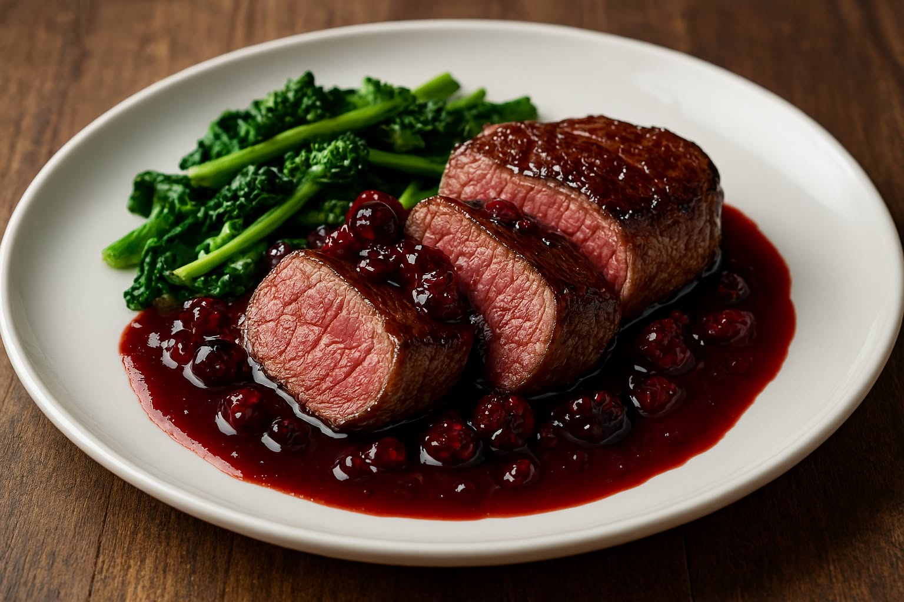

Solomillo al vino tinto con reducción de frutos rojos
Una receta gourmet que combina la intensidad del vino tinto con la dulzura de los frutos rojos, ideal para ocasiones especiales.
Ingredientes (4 personas)
- 4 medallones de solomillo de ternera
- 200 ml de vino tinto reserva
- 100 g de frutos rojos (arándanos, frambuesas, moras)
- 1 cucharada de miel
- 1 cucharada de mantequilla
- Sal y pimienta al gusto
Preparación
- Salpimenta los medallones y séllalos en una sartén caliente con mantequilla.
- Retira la carne y en la misma sartén añade el vino, la miel y los frutos rojos.
- Reduce a fuego medio hasta que espese ligeramente.
- Vuelve a incorporar el solomillo y cocina 2 minutos más por cada lado.
- Sirve caliente con la salsa por encima y acompaña con verduras al vapor o puré de patata.